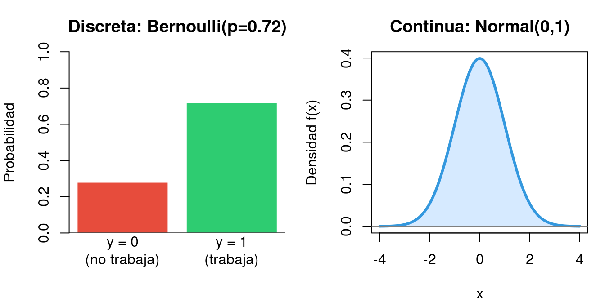
3 Modelos de Elección Discreta
3.1 Introducción: ¿por qué modelos de elección discreta?
En muchas situaciones económicas, la variable que queremos explicar no es continua (como el salario o el PIB), sino que toma un número finito de valores. Los casos más habituales son las decisiones binarias:
- ¿Trabaja esta persona o no? (\(y = 1\) o \(y = 0\))
- ¿Se concede un crédito o se deniega?
- ¿Compra el consumidor el producto o no?
Cuando la variable dependiente es binaria, el modelo de regresión lineal clásico (MCO) presenta problemas graves. Los modelos de elección discreta —Probit y Logit— resuelven estos problemas y son la herramienta estándar en microeconometría aplicada.
En estos apuntes seguiremos un hilo conductor muy claro:
- Primero entenderemos los fundamentos estadísticos que hay detrás (variable aleatoria, densidad, distribución, verosimilitud).
- Después veremos el Modelo Lineal de Probabilidad (MLP) y sus limitaciones.
- A continuación, los modelos Probit y Logit, que resuelven esas limitaciones.
- Finalmente, aprenderemos a interpretar los resultados (efectos marginales, odds ratios) y a evaluar la calidad del modelo (pseudo-R², contrastes).
Todo se ilustrará con un ejemplo aplicado: la participación laboral en España.
3.2 Fundamentos estadísticos
Antes de estimar ningún modelo, necesitamos repasar cuatro conceptos clave que aparecen constantemente en el tema.
3.2.1 Variable aleatoria
Una variable aleatoria es una variable cuyo valor depende del resultado de un fenómeno aleatorio. En nuestro contexto:
\[y_i = \text{¿Trabaja la persona } i?\]
Antes de observar a la persona, no sabemos si \(y_i\) será 0 o 1. Después de observarla, tenemos un dato fijo. La estadística nos permite modelar esa incertidumbre.
Hay dos tipos:
- Discreta: toma valores contables (0, 1, 2, …). Ejemplo: \(y \in \{0, 1\}\).
- Continua: toma cualquier valor en un intervalo. Ejemplo: el salario.
3.2.2 La distribución de Bernoulli
Cuando \(y\) solo puede ser 0 o 1, sigue una distribución Bernoulli(p):
\[P(y = 1) = p \qquad\qquad P(y = 0) = 1 - p\]
En una sola expresión compacta:
\[\boxed{P(y) = p^{\,y} \cdot (1-p)^{1-y}}\]
Comprobación rápida:
- Si \(y = 1\): \(p^1 \cdot (1-p)^0 = p\) ✓
- Si \(y = 0\): \(p^0 \cdot (1-p)^1 = 1-p\) ✓
Esta fórmula compacta es exactamente la que aparece dentro de la función de verosimilitud (sección 2.5). La clave de todo el tema es que, en lugar de asumir que \(p\) es la misma para todos los individuos, haremos que dependa de sus características: \(p_i = F(x_i'\beta)\).
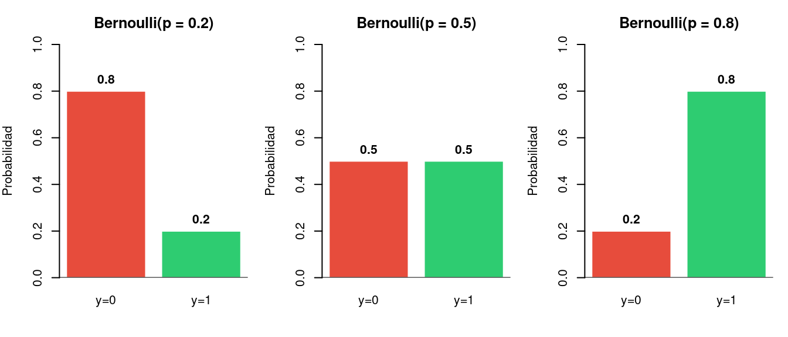
3.2.3 Función de densidad
Para variables continuas, no tiene sentido hablar de \(P(X = 2.317...)\) (esa probabilidad es siempre cero). En su lugar usamos la función de densidad \(f(x)\):
\[P(a < X < b) = \int_a^b f(x)\, dx = \text{área bajo la curva}\]
La distribución continua más importante en estadística es la Normal (campana de Gauss):
\[f(x) = \frac{1}{\sqrt{2\pi}\,\sigma} \exp\!\left(-\frac{(x-\mu)^2}{2\sigma^2}\right)\]
La Normal estándar \(N(0,1)\) — con \(\mu = 0\) y \(\sigma = 1\) — es la que utiliza el modelo Probit.
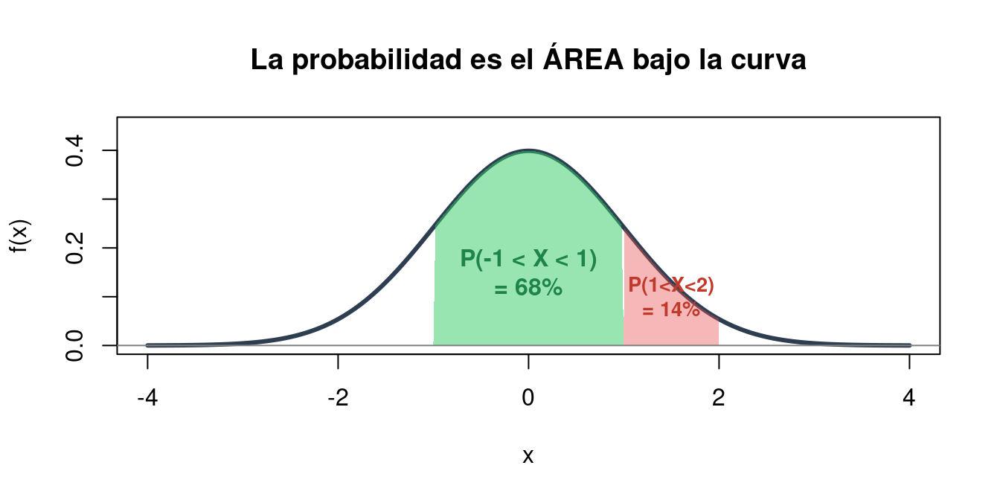
3.2.4 Función de distribución acumulada (CDF)
La CDF responde a la pregunta: ¿cuál es la probabilidad de obtener un valor \(\leq x\)?
\[F(x) = P(X \leq x) = \int_{-\infty}^{x} f(t)\, dt\]
Propiedad fundamental: \(F(x)\) siempre está en \([0, 1]\). Esto la hace perfecta para modelar probabilidades.
Cada modelo usa una CDF diferente:
- Probit \(\rightarrow\) \(\Phi(x'\beta)\), la CDF de la Normal estándar.
- Logit \(\rightarrow\) \(\Lambda(x'\beta) = \frac{1}{1 + e^{-x'\beta}}\), la CDF de la distribución logística.
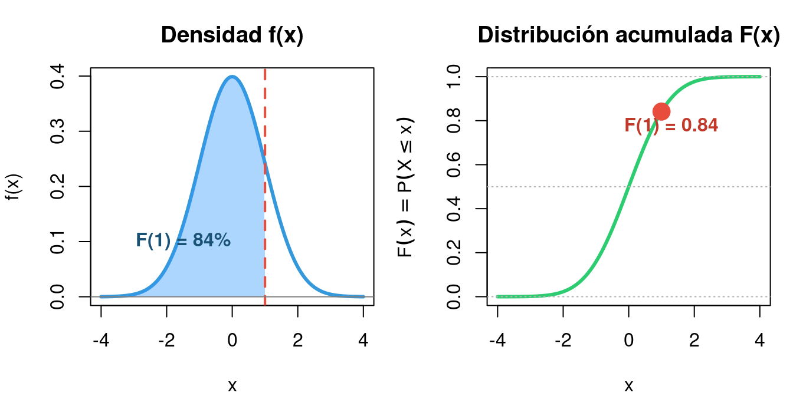
3.2.5 La verosimilitud: corazón de la estimación
3.2.5.1 Intuición
Imaginemos que lanzamos una moneda 3 veces y observamos: Cara, Cara, Cruz. ¿Cuál es la probabilidad \(p\) de cara más compatible con este resultado?
La verosimilitud \(L(p)\) mide exactamente eso: dado un valor del parámetro, ¿qué tan probable es haber observado estos datos?
\[L(p) = p \cdot p \cdot (1-p) = p^2(1-p)\]
El estimador de máxima verosimilitud (MV) elige el valor de \(p\) que maximiza \(L(p)\). En este ejemplo: \(\hat{p} = 2/3\) (la proporción muestral de caras).
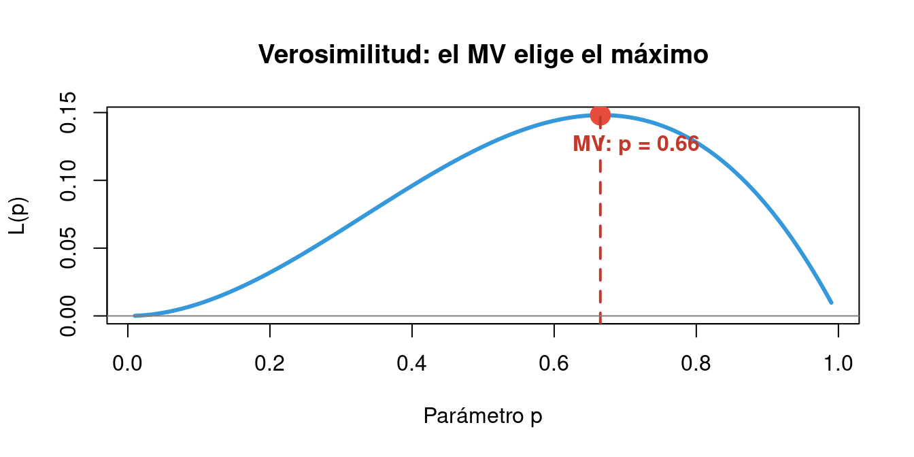
3.2.5.2 De la verosimilitud a la log-verosimilitud
Con \(N\) observaciones independientes, la verosimilitud es un producto:
\[L(\beta) = \prod_{i=1}^N p_i^{\,y_i} \cdot (1-p_i)^{1-y_i}\]
Problema práctico: multiplicar muchos números entre 0 y 1 produce números minúsculos que el ordenador no puede manejar (underflow numérico).
Solución: tomar logaritmos. El logaritmo convierte el producto en suma, y el máximo se conserva (el logaritmo es una función creciente):
\[\boxed{\ln L(\beta) = \sum_{i=1}^N \left[ y_i \ln(p_i) + (1-y_i)\ln(1-p_i) \right]}\]
Esta es la función objetivo que maximizan Probit y Logit. El término \(ll_i = y_i \ln(p_i) + (1-y_i)\ln(1-p_i)\) es la contribución del individuo \(i\) a la log-verosimilitud:
- Si \(y_i = 1\) y el modelo predice \(\hat{P}_i\) alto \(\rightarrow\) \(\ln(\hat{P}_i)\) es cercano a 0 \(\rightarrow\) bien.
- Si \(y_i = 1\) pero el modelo predice \(\hat{P}_i\) bajo \(\rightarrow\) \(\ln(\hat{P}_i)\) es muy negativo \(\rightarrow\) mal.
El estimador MV busca los \(\beta\) que hacen la log-verosimilitud lo menos negativa posible.
3.3 El Modelo Lineal de Probabilidad (MLP)
3.3.1 Planteamiento
El enfoque más simple para modelar una variable binaria es tratar \(y\) como si fuera continua y aplicar MCO:
\[P(y_i = 1 \,|\, x_i) = x_i'\beta = \beta_0 + \beta_1 x_{1i} + \beta_2 x_{2i} + \cdots\]
Es decir, la probabilidad es una función lineal de las variables explicativas. Este modelo se llama Modelo Lineal de Probabilidad (MLP).
Ventaja: es extremadamente sencillo. Los coeficientes son directamente los efectos marginales: \(\beta_j\) indica cuánto cambia la probabilidad al aumentar \(x_j\) en una unidad.
3.3.2 Limitaciones del MLP
El MLP tiene tres problemas graves:
3.3.2.1 Problema 1: Probabilidades fuera de [0, 1]
Una recta puede tomar cualquier valor real. Nada impide que el modelo prediga \(\hat{P} = -0.15\) o \(\hat{P} = 1.30\), lo cual no tiene sentido como probabilidad.
3.3.2.2 Problema 2: Heterocedasticidad
Si \(y \sim \text{Bernoulli}(p_i)\), entonces \(\text{Var}(\varepsilon_i) = p_i(1-p_i)\), que depende de \(x_i\). Los errores no son homocedásticos, lo que invalida la inferencia estándar (los errores estándar y los p-valores del MCO son incorrectos).
3.3.2.3 Problema 3: Efecto marginal constante
El MLP asume que el efecto de, por ejemplo, un año más de educación es siempre el mismo, independientemente de si la persona tiene 6 años o 18 años de educación. Económicamente, esto no es realista: el efecto debería ser mayor en la zona intermedia (donde hay más incertidumbre) y menor en los extremos (donde la decisión ya está prácticamente tomada).
3.3.3 El modelo que vamos a estimar
A lo largo de todo este tema utilizaremos un mismo modelo aplicado: la participación laboral. La variable dependiente es binaria:
\[y_i = \begin{cases} 1 & \text{si la persona } i \text{ trabaja} \\ 0 & \text{si no trabaja} \end{cases}\]
El modelo que estimaremos relaciona la probabilidad de trabajar con seis variables explicativas:
\[P(\text{trabaja}_i = 1) = F(\beta_0 + \beta_1 \, \text{educación}_i + \beta_2 \, \text{edad}_i + \beta_3 \, \text{sexo}_i + \beta_4 \, \text{experiencia}_i + \beta_5 \, \text{hijos}_i + \beta_6 \, \text{ingreso\_familiar}_i)\]
donde \(F(\cdot)\) es la función de enlace: la identidad en el MLP, \(\Phi\) en el Probit y \(\Lambda\) en el Logit. Las variables son:
- educación: años de educación completados.
- edad: edad en años.
- sexo: variable dummy (1 = Mujer, 0 = Hombre).
- experiencia: años de experiencia laboral.
- hijos: número de hijos menores de edad.
- ingreso_familiar: ingreso del hogar no procedente del trabajo del individuo (en miles de euros).
Estimaremos este mismo modelo con los tres métodos (MLP, Probit, Logit) para poder comparar resultados.
3.3.4 Ejemplo en R
Code
datos <- read.csv("participacion_laboral.csv", stringsAsFactors = TRUE)
mlp <- lm(trabaja ~ educacion + edad + sexo +
experiencia + hijos + ingreso_familiar, data = datos)
## Tabla de coeficientes
knitr::kable(round(summary(mlp)$coefficients, 4),
caption = "Coeficientes del MLP (estimados por MCO)",
escape = TRUE)| Estimate | Std. Error | t value | Pr(>|t|) | |
|---|---|---|---|---|
| (Intercept) | 0.0454 | 0.0933 | 0.4861 | 0.6271 |
| educacion | 0.0231 | 0.0068 | 3.3869 | 0.0008 |
| edad | 0.0127 | 0.0059 | 2.1554 | 0.0316 |
| sexoMujer | -0.0870 | 0.0342 | -2.5405 | 0.0114 |
| experiencia | 0.0011 | 0.0058 | 0.1838 | 0.8542 |
| hijos | -0.0433 | 0.0145 | -2.9832 | 0.0030 |
| ingreso_familiar | -0.0054 | 0.0030 | -1.7924 | 0.0737 |
Interpretación (recuerda: en el MLP, los coeficientes = efectos marginales):
- educación: un año más de educación aumenta la probabilidad de trabajar en 2.3 puntos porcentuales.
- sexo (Mujer): ser mujer reduce la probabilidad en 8.7 pp.
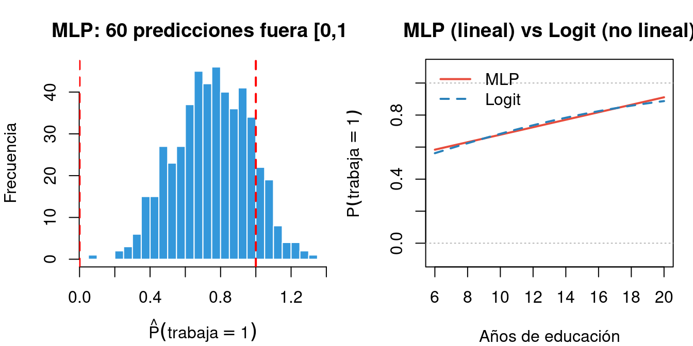
Conclusión: El MLP sirve como referencia rápida, pero sus limitaciones teóricas son serias. Necesitamos modelos que garanticen \(\hat{P} \in [0, 1]\) y capturen la no linealidad. Esos modelos son el Probit y el Logit.
3.4 El modelo Probit
3.4.1 Planteamiento
El modelo Probit resuelve los tres problemas del MLP envolviendo el índice lineal \(x'\beta\) con la CDF de la Normal estándar \(\Phi(\cdot)\):
\[\boxed{P(y_i = 1 \,|\, x_i) = \Phi(x_i'\beta) = \Phi(\beta_0 + \beta_1 x_{1i} + \cdots)}\]
donde \(\Phi(z) = \int_{-\infty}^{z} \frac{1}{\sqrt{2\pi}} e^{-t^2/2}\, dt\)
Dado que \(\Phi(\cdot)\) siempre devuelve valores en \([0, 1]\), las predicciones siempre son probabilidades válidas.
3.4.1.1 ¿Cómo se estima?
No por MCO, sino por máxima verosimilitud (MV). Se buscan los \(\hat{\beta}\) que maximizan:
\[\ln L(\beta) = \sum_{i=1}^N \left[ y_i \ln\Phi(x_i'\beta) + (1-y_i)\ln(1-\Phi(x_i'\beta)) \right]\]
Este problema no tiene solución cerrada — se resuelve numéricamente mediante algoritmos iterativos (Newton-Raphson, BFGS, etc.). En R, la función glm() hace todo el trabajo.
3.4.2 Estimación en R
Code
probit <- glm(trabaja ~ educacion + edad + sexo +
experiencia + hijos + ingreso_familiar,
data = datos, family = binomial(link = "probit"))
knitr::kable(round(summary(probit)$coefficients, 4),
caption = "Coeficientes del modelo Probit (estimados por MV)", escape = TRUE)| Estimate | Std. Error | z value | Pr(>|z|) | |
|---|---|---|---|---|
| (Intercept) | -1.9298 | 0.3865 | -4.9927 | 0.0000 |
| educacion | 0.0924 | 0.0274 | 3.3751 | 0.0007 |
| edad | 0.0536 | 0.0240 | 2.2352 | 0.0254 |
| sexoMujer | -0.3457 | 0.1409 | -2.4534 | 0.0142 |
| experiencia | 0.0000 | 0.0234 | 0.0008 | 0.9993 |
| hijos | -0.1837 | 0.0585 | -3.1417 | 0.0017 |
| ingreso_familiar | -0.0233 | 0.0124 | -1.8853 | 0.0594 |
3.4.2.1 ¿Cómo se interpretan los coeficientes?
¡Cuidado! A diferencia del MLP, los coeficientes del Probit NO son efectos marginales. Solo nos dicen la dirección del efecto:
- \(\hat{\beta}_j > 0\) \(\rightarrow\) la variable \(x_j\) aumenta la probabilidad.
- \(\hat{\beta}_j < 0\) \(\rightarrow\) la variable \(x_j\) disminuye la probabilidad.
Para saber cuánto cambia la probabilidad, necesitamos calcular los efectos marginales (sección 6).
3.5 El modelo Logit
3.5.1 Planteamiento
El modelo Logit es conceptualmente idéntico al Probit, pero usa la función logística \(\Lambda(\cdot)\) en lugar de la Normal:
\[\boxed{P(y_i = 1 \,|\, x_i) = \Lambda(x_i'\beta) = \frac{1}{1 + e^{-x_i'\beta}} = \frac{e^{x_i'\beta}}{1 + e^{x_i'\beta}}}\]
3.5.1.1 Ventajas del Logit respecto al Probit
- Fórmula cerrada: \(\Lambda(z) = 1/(1+e^{-z})\) se calcula directamente, sin integrales.
- Interpretación vía odds ratios: los coeficientes tienen una interpretación directa en términos de log-odds (veremos esto en la sección 7).
- El más usado en la práctica por estas dos razones.
3.5.1.2 Logit vs Probit: ¿cuál elegir?
En la práctica, ambos producen resultados prácticamente idénticos. La función logística y la Normal acumulada son casi iguales en el rango central, donde se concentra la mayoría de los datos. Solo difieren ligeramente en las colas (la logística tiene colas más gruesas).
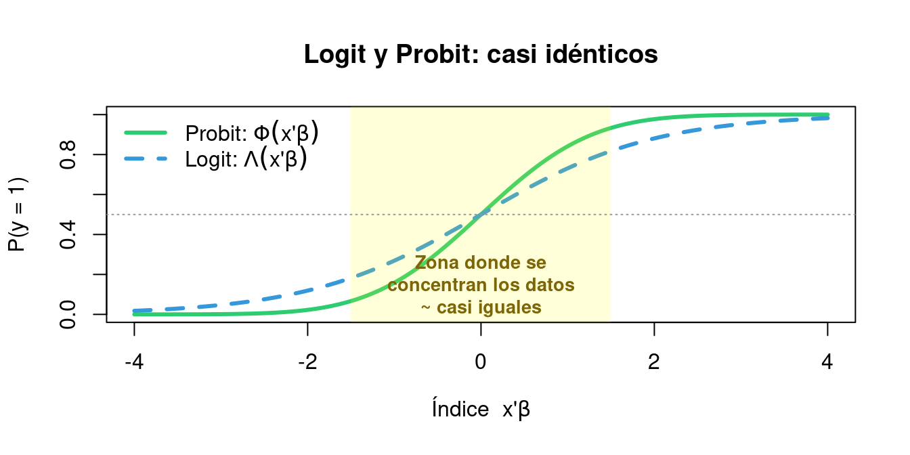
Regla práctica: la elección entre Logit y Probit es una convención del área de investigación. En economía del trabajo y salud suele usarse Probit; en marketing, finanzas y machine learning se prefiere Logit.
3.5.2 Estimación en R
Code
logit <- glm(trabaja ~ educacion + edad + sexo +
experiencia + hijos + ingreso_familiar,
data = datos, family = binomial(link = "logit"))
knitr::kable(round(summary(logit)$coefficients, 4),
caption = "Coeficientes del modelo Logit (estimados por MV)", escape = TRUE)| Estimate | Std. Error | z value | Pr(>|z|) | |
|---|---|---|---|---|
| (Intercept) | -3.3250 | 0.6825 | -4.8721 | 0.0000 |
| educacion | 0.1586 | 0.0481 | 3.3008 | 0.0010 |
| edad | 0.0932 | 0.0422 | 2.2073 | 0.0273 |
| sexoMujer | -0.6437 | 0.2477 | -2.5989 | 0.0094 |
| experiencia | 0.0012 | 0.0412 | 0.0290 | 0.9769 |
| hijos | -0.3111 | 0.1024 | -3.0366 | 0.0024 |
| ingreso_familiar | -0.0434 | 0.0216 | -2.0052 | 0.0449 |
3.6 El flujo completo: de las X a la probabilidad
Para que quede completamente claro cómo funcionan estos modelos, veamos el flujo paso a paso:
PASO 1 — Índice lineal: se calcula \(x_i'\hat{\beta} = \hat{\beta}_0 + \hat{\beta}_1 x_{1i} + \cdots\) (esto es como el \(\hat{y}\) del MCO).
PASO 2 — Función de enlace: el índice se “pasa” por la función \(F(\cdot)\): \(\Phi\) para Probit o \(\Lambda\) para Logit.
PASO 3 — Probabilidad: el resultado es \(\hat{P}_i = F(x_i'\hat{\beta}) \in [0, 1]\).
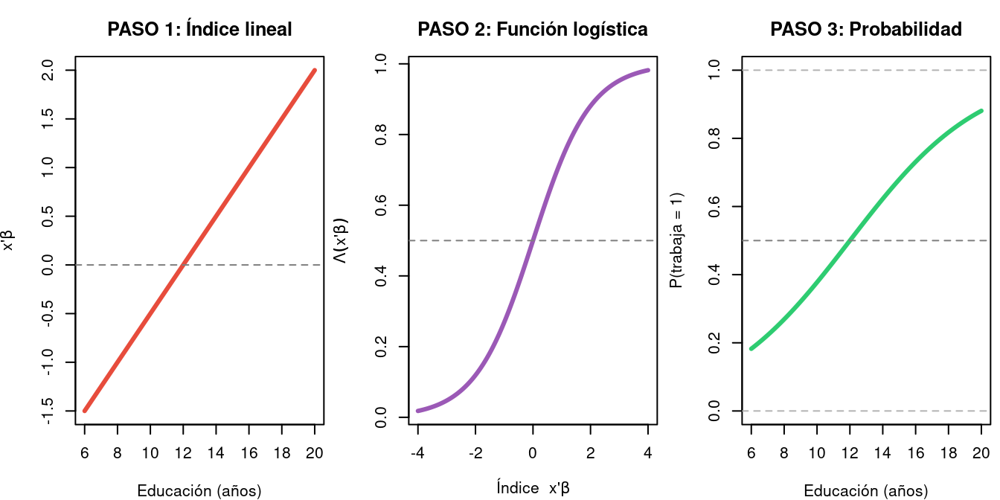
3.7 Efectos marginales
3.7.1 El problema: ¿qué significan realmente los coeficientes?
Empecemos con una pregunta concreta. Hemos estimado el modelo Logit y obtenemos \(\hat{\beta}_{\text{educacion}} = 0.35\). Un alumno pregunta: “¿Entonces un año más de educación aumenta la probabilidad de trabajar en 0.35?”
La respuesta es NO. Y entender por qué es la clave de toda esta sección.
3.7.1.1 En el MLP sí funcionaba así
En el MLP (regresión lineal), el modelo es:
\[P(y_i = 1) = \beta_0 + \beta_1 \cdot \text{educacion}_i + \cdots\]
Si \(\beta_1 = 0.04\), entonces un año más de educación siempre aumenta la probabilidad en 0.04 (4 puntos porcentuales), sin importar nada más. El efecto es constante.
3.7.1.2 En el Logit/Probit ya no funciona así
En el Logit, el modelo es:
\[P(y_i = 1) = \Lambda(\beta_0 + \beta_1 \cdot \text{educacion}_i + \cdots)\]
La función \(\Lambda(\cdot)\) es una curva en forma de S, no una recta. Por eso, el efecto de un año más de educación depende de dónde estés en la curva.
3.7.2 Ejemplo numérico paso a paso
Veamos esto con números concretos. Supongamos un modelo Logit simple:
\[P(\text{trabaja} = 1) = \Lambda(-3 + 0.25 \cdot \text{educacion})\]
3.7.2.1 Persona A: 8 años de educación (nivel bajo)
\[x'\beta = -3 + 0.25 \times 8 = -1.0 \qquad \Rightarrow \qquad P = \Lambda(-1.0) = \frac{1}{1+e^{1}} = 0.269\]
Si pasa a 9 años: \[x'\beta = -3 + 0.25 \times 9 = -0.75 \qquad \Rightarrow \qquad P = \Lambda(-0.75) = 0.321\]
Efecto marginal = 0.321 − 0.269 = +5.2 puntos porcentuales.
3.7.2.2 Persona B: 12 años de educación (nivel medio)
\[x'\beta = -3 + 0.25 \times 12 = 0.0 \qquad \Rightarrow \qquad P = \Lambda(0) = 0.500\]
Si pasa a 13 años: \[x'\beta = -3 + 0.25 \times 13 = 0.25 \qquad \Rightarrow \qquad P = \Lambda(0.25) = 0.562\]
Efecto marginal = 0.562 − 0.500 = +6.2 puntos porcentuales.
3.7.2.3 Persona C: 18 años de educación (nivel alto)
\[x'\beta = -3 + 0.25 \times 18 = 1.5 \qquad \Rightarrow \qquad P = \Lambda(1.5) = 0.818\]
Si pasa a 19 años: \[x'\beta = -3 + 0.25 \times 19 = 1.75 \qquad \Rightarrow \qquad P = \Lambda(1.75) = 0.852\]
Efecto marginal = 0.852 − 0.818 = +3.4 puntos porcentuales.
3.7.2.4 ¿Qué acabamos de ver?
El mismo cambio (+1 año de educación) produce efectos muy diferentes según el punto de partida:
| Persona | Educación | P antes | P después | Efecto marginal |
|---|---|---|---|---|
| A (nivel bajo) | 8 \(\rightarrow\) 9 | 26.9% | 32.1% | +5.2 pp |
| B (nivel medio) | 12 \(\rightarrow\) 13 | 50.0% | 56.2% | +6.2 pp |
| C (nivel alto) | 18 \(\rightarrow\) 19 | 81.8% | 85.2% | +3.4 pp |
El efecto es máximo en la zona intermedia (donde \(P \approx 0.5\)) y se reduce en los extremos. Esto tiene todo el sentido económico: si alguien ya tiene un 95% de probabilidad de trabajar, un año más de educación apenas puede subirla; pero si está en el 50%, el mismo año puede marcar una gran diferencia.
Code
## Modelo Logit simple: P = Lambda(-3 + 0.25 * educacion)
b0 <- -3; b1 <- 0.25
edu_seq <- seq(4, 22, length.out = 300)
prob_seq <- plogis(b0 + b1 * edu_seq)
par(mfrow = c(1, 2), mar = c(4, 4.5, 3.5, 1))
## --- Panel izquierdo: la curva y los tres puntos ---
plot(edu_seq, prob_seq, type = "l", lwd = 3, col = "#3498DB",
xlab = "Años de educación", ylab = "P(trabaja = 1)",
main = "Curva Logit: el efecto depende\ndel punto de partida",
ylim = c(0, 1))
abline(h = 0.5, lty = 3, col = "grey60")
## Persona A (8 años)
p_A0 <- plogis(b0 + b1 * 8); p_A1 <- plogis(b0 + b1 * 9)
arrows(8, p_A0, 9, p_A1, col = "#E74C3C", lwd = 2.5, length = 0.08)
points(8, p_A0, pch = 19, col = "#E74C3C", cex = 1.5)
text(9.3, (p_A0+p_A1)/2, sprintf("+%.1f pp", (p_A1-p_A0)*100),
col = "#C0392B", font = 2, cex = 0.85)
## Persona B (12 años)
p_B0 <- plogis(b0 + b1 * 12); p_B1 <- plogis(b0 + b1 * 13)
arrows(12, p_B0, 13, p_B1, col = "#27AE60", lwd = 2.5, length = 0.08)
points(12, p_B0, pch = 19, col = "#27AE60", cex = 1.5)
text(13.3, (p_B0+p_B1)/2, sprintf("+%.1f pp", (p_B1-p_B0)*100),
col = "#1E8449", font = 2, cex = 0.85)
## Persona C (18 años)
p_C0 <- plogis(b0 + b1 * 18); p_C1 <- plogis(b0 + b1 * 19)
arrows(18, p_C0, 19, p_C1, col = "#8E44AD", lwd = 2.5, length = 0.08)
points(18, p_C0, pch = 19, col = "#8E44AD", cex = 1.5)
text(19.3, (p_C0+p_C1)/2, sprintf("+%.1f pp", (p_C1-p_C0)*100),
col = "#6C3483", font = 2, cex = 0.85)
legend("topleft", bty = "n", pch = 19, pt.cex = 1.3,
col = c("#E74C3C", "#27AE60", "#8E44AD"),
legend = c("A: 8 años (nivel bajo)",
"B: 12 años (nivel medio)",
"C: 18 años (nivel alto)"), cex = 0.8)
## --- Panel derecho: efecto marginal en cada punto ---
edu_grid <- seq(4, 22, length.out = 200)
me_grid <- dlogis(b0 + b1 * edu_grid) * b1 * 100 # en pp
plot(edu_grid, me_grid, type = "l", lwd = 3, col = "#2C3E50",
xlab = "Años de educación",
ylab = "Efecto marginal (pp por año adicional)",
main = "El efecto marginal cambia\nsegún la educación de partida")
## Marcar los tres puntos
me_A <- dlogis(b0 + b1 * 8) * b1 * 100
me_B <- dlogis(b0 + b1 * 12) * b1 * 100
me_C <- dlogis(b0 + b1 * 18) * b1 * 100
points(8, me_A, pch = 19, col = "#E74C3C", cex = 1.5)
points(12, me_B, pch = 19, col = "#27AE60", cex = 1.5)
points(18, me_C, pch = 19, col = "#8E44AD", cex = 1.5)
text(8, me_A + 0.25, sprintf("A: %.1f pp", me_A), col = "#C0392B", font = 2, cex = 0.8)
text(12, me_B + 0.25, sprintf("B: %.1f pp", me_B), col = "#1E8449", font = 2, cex = 0.8)
text(18, me_C + 0.25, sprintf("C: %.1f pp", me_C), col = "#6C3483", font = 2, cex = 0.8)
abline(h = mean(me_grid), lty = 2, col = "grey50")
text(20, mean(me_grid) + 0.2, "Media", col = "grey40", cex = 0.75)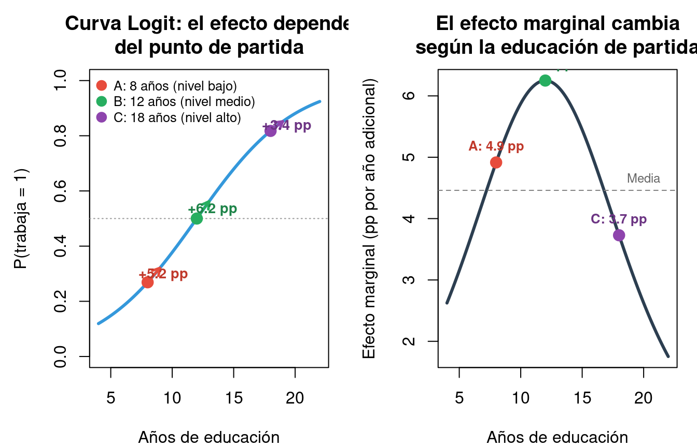
Code
par(mfrow = c(1, 1))3.7.3 La fórmula general del efecto marginal
Lo que acabamos de ver con las tres personas tiene una fórmula exacta. Recordemos qué hicimos: para cada persona calculamos la probabilidad antes y después de añadir un año de educación, y restamos. Eso es una aproximación discreta de la derivada parcial:
\[\boxed{\frac{\partial P(y=1)}{\partial x_j} = f(x'\beta) \cdot \beta_j}\]
Vamos a desmontar esta fórmula pieza a pieza:
Pieza 1: \(\beta_j\) — es el coeficiente estimado de la variable \(x_j\). Nos dice la dirección del efecto (positivo o negativo) y su intensidad en la escala latente (en el mundo del índice \(x'\beta\)).
Pieza 2: \(f(x'\beta)\) — es un factor de escala que “traduce” el efecto del mundo latente al mundo de las probabilidades. Este factor cambia de persona a persona porque depende de \(x'\beta\), es decir, de las características de cada individuo.
¿Qué es exactamente \(f\)? Es la función de densidad que corresponde a la CDF del modelo:
- En el Logit, la CDF es \(\Lambda(z)\), y su densidad es \(f(z) = \Lambda(z) \cdot [1 - \Lambda(z)] = P \cdot (1-P)\).
- En el Probit, la CDF es \(\Phi(z)\), y su densidad es \(f(z) = \phi(z)\) (la campana de Gauss).
- En el MLP, la CDF es la identidad, y su “densidad” es \(f = 1\) siempre. Por eso en el MLP el efecto marginal es simplemente \(\beta_j\).
3.7.3.1 ¿Cuánto vale ese factor de escala?
Veámoslo con el ejemplo del Logit. El factor es \(f(z) = P(1-P)\):
| Probabilidad \(P\) del individuo | Factor \(f = P(1-P)\) | ¿Grande o pequeño? |
|---|---|---|
| 0.05 (casi seguro que no trabaja) | \(0.05 \times 0.95 = 0.048\) | Muy pequeño |
| 0.25 | \(0.25 \times 0.75 = 0.188\) | Moderado |
| 0.50 (máxima incertidumbre) | \(0.50 \times 0.50 = \mathbf{0.250}\) | Máximo |
| 0.75 | \(0.75 \times 0.25 = 0.188\) | Moderado |
| 0.95 (casi seguro que trabaja) | \(0.95 \times 0.05 = 0.048\) | Muy pequeño |
Intuición clave: el factor es máximo cuando \(P = 0.50\) (máxima incertidumbre) y se acerca a cero en los extremos. Esto significa que un año más de educación “mueve” más la probabilidad de las personas que están en la zona de duda que de las que ya tienen la decisión prácticamente tomada.
3.7.3.2 Volviendo al ejemplo numérico
Retomemos las tres personas con \(\beta_{\text{educacion}} = 0.25\):
- Persona A (\(P = 0.269\)): EM \(= 0.269 \times 0.731 \times 0.25 = 0.049\) \(\rightarrow\) 4.9 pp
- Persona B (\(P = 0.500\)): EM \(= 0.500 \times 0.500 \times 0.25 = 0.063\) \(\rightarrow\) 6.3 pp (máximo)
- Persona C (\(P = 0.818\)): EM \(= 0.818 \times 0.182 \times 0.25 = 0.037\) \(\rightarrow\) 3.7 pp
Son exactamente los valores que habíamos calculado antes “a bruto” restando probabilidades. La fórmula simplemente nos da el atajo matemático.
3.7.4 ¿Cómo resumir el efecto en un solo número?
Ya tenemos claro que el efecto marginal es distinto para cada individuo. Pero cuando presentamos resultados necesitamos un solo número que diga “el efecto de la educación es de X puntos porcentuales”. ¿Cómo lo obtenemos?
Hay dos estrategias. Veamos cada una con un ejemplo numérico para que quede claro qué hace cada una.
3.7.4.1 Opción 1: Efecto marginal en la media (MEM)
¿Qué hace? Inventa un “individuo promedio” — uno que tenga exactamente la educación media de la muestra, la edad media, etc. — y calcula el efecto marginal solo para él.
\[\text{MEM}_j = f(\bar{x}'\hat{\beta}) \cdot \hat{\beta}_j\]
Ejemplo: si en nuestra muestra la educación media es 13 años, la edad media es 41 años, etc., el MEM toma esa persona ficticia, calcula su \(x'\beta\), obtiene su factor \(f\), y multiplica por \(\beta_j\). Un solo cálculo, un solo número.
¿Cuándo falla? El “individuo promedio” puede no existir. Por ejemplo, si el sexo medio es 0.48 (48% mujeres), ¿qué es una persona con sexo = 0.48? No tiene sentido. Otro problema: si la distribución de probabilidades en la muestra es muy asimétrica, el individuo medio puede no ser representativo del efecto típico.
En R se obtiene con la opción atmean = TRUE.
3.7.4.2 Opción 2: Efecto marginal promedio (AME) ★ RECOMENDADO
¿Qué hace? En lugar de inventar una persona ficticia, calcula el efecto marginal para cada una de las N personas reales de la muestra, y luego toma el promedio:
\[\text{AME}_j = \frac{1}{N} \sum_{i=1}^N \underbrace{f(x_i'\hat{\beta})}_{\text{factor del individuo } i} \cdot \hat{\beta}_j\]
Ejemplo con N = 5 personas (simplificado):
| Individuo | \(P_i\) | Factor \(f_i = P_i(1-P_i)\) | EM\(_i\) = \(f_i \times 0.25\) |
|---|---|---|---|
| 1 | 0.30 | 0.210 | 0.053 |
| 2 | 0.55 | 0.248 | 0.062 |
| 3 | 0.80 | 0.160 | 0.040 |
| 4 | 0.45 | 0.248 | 0.062 |
| 5 | 0.70 | 0.210 | 0.053 |
\[\text{AME} = \frac{0.053 + 0.062 + 0.040 + 0.062 + 0.053}{5} = 0.054 \quad \text{(5.4 pp)}\]
¿Por qué es mejor? Porque usa personas reales, no ficticias. No hay ningún “individuo promedio inventado” — simplemente se promedian los efectos de todos. Es el método recomendado en la literatura aplicada.
En R se obtiene con la opción atmean = FALSE.
3.7.4.3 ¿Y para variables categóricas (como sexo)?
La educación es continua: podemos hablar de “un año más” y calcular una derivada. Pero el sexo es una categoría: no podemos hablar de “un poquito más de mujer”, ni tiene sentido calcular una derivada respecto al sexo. Entonces, ¿cómo medimos el efecto de ser mujer?
La idea es sencilla: simulamos el cambio. Para cada individuo, calculamos qué probabilidad tendría si fuera hombre y qué probabilidad tendría si fuera mujer, y restamos. Veámoslo paso a paso.
Paso 1 — Tomamos un individuo cualquiera (por ejemplo, el individuo 1: 14 años de educación, 35 años, 2 hijos, etc.).
Paso 2 — Calculamos su probabilidad “como hombre”: ponemos sexo = Hombre, dejamos todo lo demás igual, y evaluamos el modelo:
\[P_1^{\text{hombre}} = \Lambda(\hat{\beta}_0 + \hat{\beta}_1 \cdot 14 + \hat{\beta}_2 \cdot 35 + \hat{\beta}_3 \cdot 0 + \cdots) = 0.78\]
Paso 3 — Calculamos su probabilidad “como mujer”: cambiamos solo el sexo a Mujer:
\[P_1^{\text{mujer}} = \Lambda(\hat{\beta}_0 + \hat{\beta}_1 \cdot 14 + \hat{\beta}_2 \cdot 35 + \hat{\beta}_3 \cdot 1 + \cdots) = 0.65\]
Paso 4 — Restamos: el efecto marginal del sexo para este individuo es:
\[\text{EM}_1 = P_1^{\text{mujer}} - P_1^{\text{hombre}} = 0.65 - 0.78 = -0.13 \quad (-13 \text{ pp})\]
Es decir, esta persona en concreto, si fuera mujer en lugar de hombre, tendría 13 puntos porcentuales menos de probabilidad de trabajar.
Paso 5 — Repetimos para todos y promediamos (AME): hacemos lo mismo para los 500 individuos de la muestra. Cada uno tendrá un efecto diferente (porque sus demás características son distintas). El AME es el promedio:
| Individuo | \(P^{\text{hombre}}\) | \(P^{\text{mujer}}\) | Efecto del sexo |
|---|---|---|---|
| 1 | 0.78 | 0.65 | −13 pp |
| 2 | 0.45 | 0.32 | −13 pp |
| 3 | 0.92 | 0.86 | −6 pp |
| 4 | 0.60 | 0.46 | −14 pp |
| … | … | … | … |
| AME | ≈ −12 pp |
Fíjate que el efecto no es igual para todos: para el individuo 3 (que ya tenía una probabilidad muy alta) el efecto es menor (−6 pp), mientras que para el 4 (en zona intermedia) es mayor (−14 pp). Esto es coherente con todo lo que hemos visto: el efecto es mayor donde hay más incertidumbre.
En resumen: para variables categóricas, el efecto marginal es la diferencia de probabilidades “encendiendo y apagando” la categoría, manteniendo todo lo demás constante. El AME promedia esa diferencia para todos los individuos.
3.7.5 Cálculo en R de los efectos marginales
Todo lo explicado anteriormente se implementa en R. Primero veremos cómo hacerlo “a mano” (para entender qué hace R por dentro) y después con el paquete mfx (lo que usaremos en la práctica).
3.7.5.1 Cálculo “a mano”
El procedimiento para calcular el efecto marginal de educación en el modelo Logit es:
- Para un individuo: obtener su índice \(x'\hat{\beta}\), calcular su probabilidad \(P = \Lambda(x'\hat{\beta})\), obtener el factor \(f = P(1-P)\), y multiplicar por \(\hat{\beta}_{\text{edu}}\).
- Para el AME: repetir lo anterior para los N individuos de la muestra y promediar.
Internamente, R ejecuta exactamente esos dos pasos — primero para un individuo concreto y luego para todos.
Code
## --- Efecto marginal para UN individuo (el nº 1) ---
xb_1 <- predict(logit, newdata = datos[1, ], type = "link") # x'b
P_1 <- plogis(xb_1) # P = L(x'b)
f_1 <- P_1 * (1 - P_1) # factor de escala
me_1 <- f_1 * coef(logit)["educacion"] # EM individual
cat(sprintf("Individuo 1: x'b = %.3f --> P = %.3f --> f = %.3f --> EM = %.4f (%.2f pp)\n",
xb_1, P_1, f_1, me_1, me_1*100))
## --- AME: repetimos para TODOS los individuos y promediamos ---
xb_todos <- predict(logit, type = "link")
P_todos <- plogis(xb_todos)
f_todos <- P_todos * (1 - P_todos)
me_edu_todos <- f_todos * coef(logit)["educacion"]
cat(sprintf("\nAME de educación (N = %d individuos):\n", length(me_edu_todos)))
cat(sprintf(" Mínimo: %.2f pp\n", min(me_edu_todos)*100))
cat(sprintf(" Máximo: %.2f pp\n", max(me_edu_todos)*100))
cat(sprintf(" PROMEDIO: %.2f pp <-- este es el AME que reportamos\n",
mean(me_edu_todos)*100))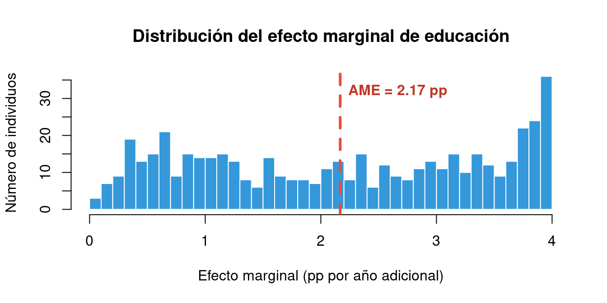
3.7.5.2 Con el paquete mfx (lo que haremos en la práctica)
En la práctica no hace falta calcular nada a mano. Todo lo anterior se obtiene automáticamente con una sola línea:
Code
library(mfx)
## AME (atmean = FALSE): promedia el efecto de cada individuo
logit_mfx <- logitmfx(trabaja ~ educacion + edad + sexo +
experiencia + hijos + ingreso_familiar,
data = datos, atmean = FALSE)
print(logit_mfx)3.7.5.3 Interpretación completa de los resultados
| Variable | Cambio unitario | AME (pp) |
|---|---|---|
| Educación | +1 año educ. | +2.17 |
| Edad | +1 año edad | +1.27 |
| Experiencia | +1 año exp. | +0.02 |
| Sexo (Mujer) | Mujer vs Hombre | -8.85 |
| Hijos | +1 hijo menor | -4.25 |
| Ingreso familiar | +1.000 EUR ingreso | -0.59 |
Regla para recordar: en Logit/Probit, nunca interpretes el coeficiente directamente. Siempre calcula los efectos marginales. El coeficiente te dice la dirección (+/−); el efecto marginal te dice cuánto cambia la probabilidad.
3.8 Odds ratios (solo Logit)
3.8.1 ¿Qué es el odds?
El odds es la razón entre la probabilidad de que algo ocurra y la de que no ocurra:
\[\text{Odds} = \frac{P}{1-P}\]
| Probabilidad \(P\) | Odds | Lectura coloquial |
|---|---|---|
| 0.50 | 1.0 | “50-50”, equiprobable |
| 0.75 | 3.0 | “3 a 1 a favor” |
| 0.25 | 0.33 | “1 a 3 en contra” |
| 0.90 | 9.0 | “9 a 1 a favor” |
3.8.2 Los log-odds y el modelo Logit: demostración
El modelo Logit tiene una propiedad única que lo distingue del Probit: el índice lineal \(x'\beta\) es directamente el logaritmo del odds (log-odds). Vamos a demostrarlo paso a paso.
3.8.2.1 Paso 1: partimos de la función logística
En el modelo Logit, la probabilidad de éxito es:
\[P = \Lambda(x'\beta) = \frac{1}{1 + e^{-x'\beta}} = \frac{e^{x'\beta}}{1 + e^{x'\beta}}\]
3.8.2.2 Paso 2: calculamos \(1 - P\)
\[1 - P = 1 - \frac{e^{x'\beta}}{1 + e^{x'\beta}} = \frac{1 + e^{x'\beta} - e^{x'\beta}}{1 + e^{x'\beta}} = \frac{1}{1 + e^{x'\beta}}\]
3.8.2.3 Paso 3: formamos el odds \(\frac{P}{1-P}\)
\[\text{Odds} = \frac{P}{1-P} = \frac{\frac{e^{x'\beta}}{1 + e^{x'\beta}}}{\frac{1}{1 + e^{x'\beta}}} = e^{x'\beta}\]
Los \((1 + e^{x'\beta})\) se cancelan y queda simplemente \(e^{x'\beta}\).
3.8.2.4 Paso 4: tomamos logaritmo
\[\ln\!\left(\frac{P}{1-P}\right) = x'\beta = \beta_0 + \beta_1 x_1 + \beta_2 x_2 + \cdots\]
Resultado clave: en el modelo Logit, el logaritmo del odds es una función lineal de las variables explicativas. Esto NO ocurre en el Probit.
3.8.2.5 Paso 5: demostramos que \(e^{\beta_j}\) es el odds ratio
Queremos ver qué pasa con el odds cuando \(x_j\) aumenta en una unidad (de \(x_j\) a \(x_j + 1\)), manteniendo todo lo demás constante.
Odds cuando \(x_j\) toma su valor original:
\[\text{Odds}_{\text{antes}} = e^{\beta_0 + \cdots + \beta_j \, x_j + \cdots}\]
Odds cuando \(x_j\) aumenta en 1 unidad:
\[\text{Odds}_{\text{después}} = e^{\beta_0 + \cdots + \beta_j \, (x_j + 1) + \cdots}\]
El odds ratio es el cociente:
\[OR_j = \frac{\text{Odds}_{\text{después}}}{\text{Odds}_{\text{antes}}} = \frac{e^{\beta_0 + \cdots + \beta_j(x_j+1) + \cdots}}{e^{\beta_0 + \cdots + \beta_j \, x_j + \cdots}}\]
Al dividir exponenciales con la misma base, se restan los exponentes. Todos los términos se cancelan excepto el que contiene \(\beta_j\):
\[OR_j = e^{\beta_j(x_j + 1) - \beta_j \, x_j} = e^{\beta_j \, x_j + \beta_j - \beta_j \, x_j} = \boxed{e^{\beta_j}}\]
Resultado fundamental: el odds ratio \(e^{\beta_j}\) no depende del punto de evaluación \(x_j\). Es constante para cualquier individuo. Esta es la gran ventaja interpretativa del Logit frente al Probit.
3.8.2.6 Qué significa exactamente el odds ratio: ejemplo numérico
Supongamos que estimamos un Logit donde \(y\) = “trabaja” (1) o “no trabaja” (0), y una de las variables es educación (años). Obtenemos \(\hat{\beta}_{\text{edu}} = 0.30\).
El odds ratio es: \(OR = e^{0.30} = 1.350\)
Pregunta: ¿Qué significa exactamente \(OR = 1.350\)?
Imaginemos dos personas idénticas en todo (misma edad, sexo, experiencia…) excepto que la Persona B tiene un año más de educación que la Persona A.
Persona A (12 años edu.) |
Persona B (13 años edu.) |
|
|---|---|---|
| Probabilidad de trabajar \(P\) | 0.60 | ? |
| Odds = \(P/(1-P)\) | \(0.60/0.40 = 1.50\) | \(1.50 \times 1.350 = 2.025\) |
| Probabilidad resultante | 0.60 | \(2.025/3.025 = 0.669\) |
Lectura: cada año adicional de educación multiplica el odds de trabajar por 1.35. Es decir, el odds de la Persona B es un 35% mayor que el de la Persona A.
3.8.2.7 Pero, ¿qué es el odds exactamente? La analogía del hipódromo
Es habitual confundir el odds con la probabilidad. No son lo mismo. Para entenderlo de forma intuitiva, pensemos en un hipódromo.
Un caballo tiene un 80% de probabilidades de ganar una carrera.
- Probabilidad: 80%. De cada 10 carreras, gana 8.
- Odds: 8 victorias / 2 derrotas = 4 a 1 a favor.
El odds nos dice: “por cada vez que pierde, gana 4 veces”. Es la ventaja a favor del evento.
| Probabilidad \(P\) | Odds = \(P/(1-P)\) | Lectura |
|---|---|---|
| 0.50 | 1.0 | “50-50”: gana 1 vez por cada vez que pierde |
| 0.75 | 3.0 | “3 a 1”: gana 3 veces por cada vez que pierde |
| 0.80 | 4.0 | “4 a 1”: gana 4 veces por cada vez que pierde |
| 0.90 | 9.0 | “9 a 1”: gana 9 veces por cada vez que pierde |
3.8.2.8 ¿Qué es entonces el odds ratio? Seguimos en el hipódromo
El odds ratio responde a la pregunta: si cambio algo, ¿cuánto se multiplica esa ventaja?
Ejemplo con OR > 1: le ponemos un mejor jinete al caballo. El OR del jinete es 2.0.
- Antes (jinete normal): odds = 4 (“gana 4 por cada 1 que pierde”)
- Después (mejor jinete): odds = \(4 \times 2.0 = 8\) (“gana 8 por cada 1 que pierde”)
El mejor jinete ha duplicado la ventaja. Eso es \(OR = 2\).
Ejemplo con OR < 1: ahora llueve. El OR de la lluvia es 0.50.
- Antes (seco): odds = 4 (“gana 4 por cada 1 que pierde”)
- Después (lluvia): odds = \(4 \times 0.50 = 2\) (“gana 2 por cada 1 que pierde”)
La lluvia ha reducido la ventaja a la mitad. Eso es \(OR = 0.5\).
Ejemplo con OR = 1: le cambiamos la silla de montar. El OR de la silla es 1.0.
- Antes: odds = 4. Después: odds = \(4 \times 1.0 = 4\). No cambia nada.
La silla no afecta. \(OR = 1\) significa “sin efecto”.
3.8.2.9 Del hipódromo a la econometría
El razonamiento es exactamente el mismo. Si en un Logit de participación laboral obtenemos:
- Educación: \(OR = 1.35\). Cada año de educación adicional mejora la ventaja de trabajar vs. no trabajar un 35%. Como pasar de “gano 4 a 1” a “gano 5.4 a 1”.
- Hijos: \(OR = 0.67\). Cada hijo recorta la ventaja de trabajar un 33%. Como pasar de “gano 4 a 1” a “gano 2.7 a 1”.
Volvamos al ejemplo numérico de las Personas A y B:
- Persona A (12 años edu., \(P = 0.60\)): odds = \(0.60/0.40 = 1.50\) (“trabaja 1.5 veces por cada vez que no trabaja”)
- Persona B (13 años edu.): odds = \(1.50 \times 1.35 = 2.025\) (“trabaja 2 veces por cada vez que no trabaja”)
- Probabilidad resultante de B: \(P = 2.025 / 3.025 = 0.669\)
3.8.2.10 Odds ratio \(\neq\) cambio en probabilidad
Atención a un punto que se presta a confusión:
\[\text{El odds subió un 35\%} \quad \neq \quad \text{la probabilidad subió un 35\%}\]
La probabilidad pasó de 60.0% a 66.9%: solo subió ~7 puntos porcentuales. ¿Por qué? Porque odds y probabilidad están relacionados de forma no lineal: \(P = \text{Odds} / (1 + \text{Odds})\).
El OR te dice cuánto cambia la ventaja relativa (la “apuesta”), no cuánto cambia la probabilidad directamente. Para conocer el cambio en probabilidad, se utilizan los efectos marginales (sección 7).
Regla de oro: el OR comunica cuánto se multiplica la ventaja. Los efectos marginales comunican cuánto cambia la probabilidad en puntos porcentuales. Son complementarios.
Fórmula general para interpretar el cambio porcentual del odds:
\[\text{Cambio \% en el odds} = (OR - 1) \times 100\]
3.8.2.11 Guía de interpretación según el valor del OR
Cuando \(OR > 1\) (el coeficiente \(\beta_j\) es positivo):
- \(OR = 1.10\): el odds aumenta un 10% por cada unidad adicional de \(x_j\).
- \(OR = 1.50\): el odds aumenta un 50%.
- \(OR = 2.00\): el odds se duplica.
- \(OR = 3.00\): el odds se triplica.
Cuando \(OR < 1\) (el coeficiente \(\beta_j\) es negativo):
Este caso se presta a confusión. Veámoslo con cuidado.
Si \(\hat{\beta}_{\text{hijos}} = -0.40\), entonces \(OR = e^{-0.40} = 0.670\).
Esto significa que cada hijo adicional multiplica el odds por \(0.670\). Es decir, el nuevo odds es solo el 67% del anterior: se reduce un 33%.
Ejemplo numérico: supongamos que una mujer sin hijos tiene \(P = 0.80\) de trabajar:
| Situación | Odds | Cálculo | P resultante |
|---|---|---|---|
| Sin hijos | \(0.80/0.20 = 4.00\) | (partida) | 0.800 |
| Con 1 hijo | \(4.00 \times 0.670 = 2.68\) | \(2.68/3.68 = 0.728\) | |
| Con 2 hijos | \(2.68 \times 0.670 = 1.796\) | \(1.796/2.796 = 0.642\) | |
| Con 3 hijos | \(1.796 \times 0.670 = 1.203\) | \(1.203/2.203 = 0.546\) |
Lectura: cada hijo adicional reduce el odds de trabajar un 33%. Observa que el efecto es multiplicativo: no se restan 33 puntos porcentuales, sino que el odds se multiplica por 0.67 cada vez.
- \(OR = 0.90\): el odds se reduce un 10%.
- \(OR = 0.50\): el odds se reduce un 50% (se divide por 2).
- \(OR = 0.25\): el odds se reduce un 75% (se divide por 4).
Cuando \(OR = 1\) (el coeficiente \(\beta_j = 0\)):
La variable no tiene efecto. El odds no cambia. Esto equivale a decir que la variable es irrelevante para predecir \(y\).
Atención: el odds ratio mide el cambio en el odds (razón \(P/(1-P)\)), NO en la probabilidad directamente. Un \(OR = 2\) no significa que la probabilidad se duplique. Para conocer el cambio en probabilidad, hay que calcular los efectos marginales (sección 7).
Recordatorio: los odds ratios solo tienen interpretación directa en el modelo Logit, porque es el único donde \(\ln(\text{Odds}) = x'\beta\) (lineal). En el Probit no se calculan odds ratios — se usan directamente los efectos marginales.
Code
OR <- exp(coef(logit))
IC <- exp(confint.default(logit))
tabla_or <- data.frame(
Variable = names(OR),
OR = round(OR, 3),
IC_95_inf = round(IC[, 1], 3),
IC_95_sup = round(IC[, 2], 3)
)
knitr::kable(tabla_or, caption = "Odds Ratios del modelo Logit con IC al 95%",
row.names = FALSE, escape = TRUE)| Variable | OR | IC_95_inf | IC_95_sup |
|---|---|---|---|
| (Intercept) | 0.036 | 0.009 | 0.137 |
| educacion | 1.172 | 1.067 | 1.288 |
| edad | 1.098 | 1.011 | 1.192 |
| sexoMujer | 0.525 | 0.323 | 0.854 |
| experiencia | 1.001 | 0.923 | 1.085 |
| hijos | 0.733 | 0.599 | 0.896 |
| ingreso_familiar | 0.958 | 0.918 | 0.999 |
Ejemplo de interpretación:
| Variable | OR | Cambio en odds |
|---|---|---|
| educacion | 1.172 | +17.2% |
| edad | 1.098 | +9.8% |
| sexoMujer | 0.525 | -47.5% |
| experiencia | 1.001 | +0.1% |
| hijos | 0.733 | -26.7% |
| ingreso_familiar | 0.958 | -4.2% |
3.9 Bondad de ajuste: Pseudo-R² de McFadden
3.9.1 ¿Por qué no podemos usar el R² clásico?
El \(R^2\) clásico del MCO mide la proporción de varianza explicada, pero en modelos binarios estimados por MV no existe una descomposición análoga de la varianza. En su lugar se usa el Pseudo-R² de McFadden:
\[\boxed{\tilde{R}^2 = 1 - \frac{\ln L_{SR}}{\ln L_R}}\]
donde:
- \(\ln L_R\) es la log-verosimilitud del modelo restringido (solo la constante, sin variables explicativas).
- \(\ln L_{SR}\) es la log-verosimilitud del modelo sin restringir (completo, con todas las variables).
3.9.1.1 Guía de interpretación
| Pseudo-R² | Interpretación |
|---|---|
| \(< 0.10\) | Ajuste débil |
| \([0.10, 0.20]\) | Ajuste aceptable |
| \([0.20, 0.40]\) | Buen ajuste |
| \(> 0.40\) | Ajuste excelente (raro en datos sociales) |
¡Cuidado! No se puede comparar directamente con el \(R^2\) del MCO. Un pseudo-\(R^2\) de 0.20 es un resultado perfectamente respetable en microeconometría.
3.9.2 Criterios de información: AIC y BIC
Además del pseudo-\(R^2\), existen dos criterios que permiten comparar modelos de forma más rigurosa: el Criterio de Información de Akaike (AIC) y el Criterio de Información Bayesiano (BIC). Ambos parten de la log-verosimilitud pero incorporan una penalización por complejidad: cuantos más parámetros tenga el modelo, mayor es la penalización, lo que desincentiva el sobreajuste.
El AIC se define como:
\[\text{AIC} = -2 \ln L(\hat{\beta}) + 2k\]
donde \(\ln L(\hat{\beta})\) es la log-verosimilitud maximizada del modelo y \(k\) es el número de parámetros estimados (incluida la constante). El primer término mide la bondad de ajuste (menor $= $ mejor) y el segundo penaliza la complejidad.
El BIC (también llamado criterio de Schwarz) incorpora además el tamaño muestral:
\[\text{BIC} = -2 \ln L(\hat{\beta}) + k \ln(n)\]
donde \(n\) es el número de observaciones. Dado que \(\ln(n) > 2\) para cualquier muestra de más de 7 observaciones, el BIC penaliza la complejidad más severamente que el AIC y tiende a seleccionar modelos más parsimoniosos.
La interpretación de ambos criterios es sencilla: menor es mejor. Al comparar dos modelos estimados sobre los mismos datos, se prefiere el que presente un AIC (o BIC) inferior. Ambos criterios no tienen una escala absoluta — solo tienen sentido como herramienta de comparación relativa entre modelos alternativos.
En la práctica, AIC y BIC no siempre seleccionan el mismo modelo. Cuando discrepan, el AIC suele preferir modelos ligeramente más complejos, mientras que el BIC tiende a ser más conservador. La elección entre uno y otro depende de si se prioriza la capacidad predictiva (AIC) o la parsimonia (BIC).
3.9.3 Cálculo en R
| Modelo | Pseudo-\(R^2\) McFadden | AIC | BIC |
|---|---|---|---|
| Logit | 0.2403 | 439.5 | 469.0 |
| Probit | 0.2394 | 440.0 | 469.5 |
Además, la tabla de clasificación proporciona una medida intuitiva de la capacidad predictiva:
| Observado | 0 | 1 |
|---|---|---|
| 0 | 56 | 68 |
| 1 | 26 | 350 |
3.10 Contrastes de hipótesis
3.10.1 Significación individual: el test \(z\) (o test de Wald individual)
Antes de contrastar grupos de variables, la pregunta más básica es: ¿es significativa esta variable concreta? Es decir, ¿contribuye a explicar \(y\)?
3.10.1.1 Planteamiento
Para cada coeficiente \(\beta_j\) del modelo, contrastamos:
\[H_0: \beta_j = 0 \qquad \text{(la variable } x_j \text{ NO influye en } y\text{)}\] \[H_1: \beta_j \neq 0 \qquad \text{(la variable } x_j \text{ SÍ influye en } y\text{)}\]
3.10.1.2 El estadístico
\[z_j = \frac{\hat{\beta}_j}{\text{SE}(\hat{\beta}_j)} \quad \xrightarrow{d} \quad N(0,1) \qquad \text{bajo } H_0\]
donde \(\text{SE}(\hat{\beta}_j)\) es el error estándar del coeficiente estimado.
Regla de decisión: rechazamos \(H_0\) (la variable es significativa) si \(|z_j| > z_{\alpha/2}\). Para un nivel del 5%, el valor crítico es \(z_{0.025} = 1.96\).
Equivalentemente, rechazamos si el p-valor \(< \alpha\) (habitualmente \(\alpha = 0.05\)).
3.10.1.3 Dónde aparece en R
Al hacer summary(modelo), R muestra una tabla con cuatro columnas para cada coeficiente:
| Columna | Significado |
|---|---|
Estimate |
\(\hat{\beta}_j\) (coeficiente estimado) |
Std. Error |
\(\text{SE}(\hat{\beta}_j)\) (error estándar) |
z value |
El estadístico \(z_j = \hat{\beta}_j / \text{SE}(\hat{\beta}_j)\) |
Pr(>|z|) |
El p-valor del contraste bilateral |
Los asteriscos al final de cada fila resumen la significación:
***: p < 0.001 (muy significativo)**: p < 0.01*: p < 0.05.: p < 0.10 (significativo solo al 10%)- (vacío) : no significativo
3.10.1.4 Tabla resumen: coeficiente, efecto marginal, odds ratio e interpretación
Para fijar ideas, supongamos un modelo Logit estimado sobre participación laboral (\(y\) = trabaja). La tabla siguiente resume los resultados estadísticos:
| Variable | \(\hat{\beta}\) | p-valor | EM (pp) | OR |
|---|---|---|---|---|
| educación | +0.30 | <0.001*** | +5.2 | 1.35 |
| sexo (Mujer) | $-$0.88 | 0.002** | $-$15.1 | 0.41 |
| hijos | $-$0.40 | 0.013* | $-$6.8 | 0.67 |
| experiencia | +0.05 | 0.230 | +0.9 | 1.05 |
Interpretación de cada variable:
La educación es altamente significativa (\(p < 0.001\)). Cada año adicional de educación aumenta la probabilidad de trabajar en 5.2 puntos porcentuales y multiplica el odds por 1.35 (un incremento del 35% en la ventaja relativa).
El sexo también es significativo (\(p = 0.002\)). Ser mujer, respecto a ser hombre y manteniendo el resto constante, reduce la probabilidad de trabajar en 15.1 puntos porcentuales. El odds de trabajar de una mujer es un 59% inferior al de un hombre con idénticas características (\(OR = 0.41\)).
Cada hijo adicional reduce la probabilidad en 6.8 puntos porcentuales y el odds en un 33% (\(OR = 0.67\), \(p = 0.013\)).
La experiencia, en cambio, no resulta significativa (\(p = 0.230\)): no se detecta evidencia estadística de que influya en la participación laboral en este modelo.
Nota: el coeficiente \(\hat{\beta}\) indica la dirección del efecto y permite calcular el OR (exponenciando), pero su magnitud NO es directamente interpretable como cambio en probabilidad. Para eso sirven los efectos marginales.
3.10.1.5 Ejemplo en R
| Variable | \(\hat{\beta}\) | SE | \(p\) | OR |
|---|---|---|---|---|
| educacion | 0.1586 | 0.0481 | 0.0010 | 1.172 |
| edad | 0.0932 | 0.0422 | 0.0273 | 1.098 |
| sexoMujer | -0.6437 | 0.2477 | 0.0094 | 0.525 |
| experiencia | 0.0012 | 0.0412 | 0.9769 | 1.001 |
| hijos | -0.3111 | 0.1024 | 0.0024 | 0.733 |
| ingreso_familiar | -0.0434 | 0.0216 | 0.0449 | 0.958 |
3.10.2 Test de Wald (significación conjunta)
3.10.2.1 ¿Qué pregunta responde?
El test \(z\) individual que acabamos de ver contrasta si una sola variable es significativa. Pero con frecuencia queremos contrastar si un grupo de variables es conjuntamente significativo. Por ejemplo: ¿contribuyen conjuntamente las variables demográficas (edad, sexo, hijos) a explicar la participación laboral? Es posible que ninguna de ellas sea individualmente significativa, pero que juntas sí aporten información relevante.
El test de Wald responde exactamente a esta pregunta. Su hipótesis nula establece que todos los coeficientes del grupo son simultáneamente cero:
\[H_0: \beta_{j_1} = \beta_{j_2} = \cdots = \beta_{j_r} = 0\]
Si rechazamos \(H_0\), concluimos que al menos una de las variables del grupo tiene un efecto significativo sobre \(y\).
3.10.2.2 El estadístico
El estadístico de Wald mide la distancia entre los coeficientes estimados y los valores que impone la hipótesis nula (en este caso, cero), ponderada por la precisión de la estimación:
\[W = \hat{d}'\,\hat{V}_d^{-1}\,\hat{d}\]
donde \(\hat{d} = R\hat{\beta} - q\) es el vector de desviaciones respecto a \(H_0\) (si \(H_0: \beta = 0\), entonces \(\hat{d} = \hat{\beta}\)) y \(\hat{V}_d = R\,\widehat{\text{Var}}(\hat{\beta})\,R'\) es la matriz de varianzas-covarianzas de esas desviaciones.
Bajo \(H_0\), el estadístico sigue asintóticamente una distribución chi-cuadrado con \(r\) grados de libertad:
\[W \sim \chi^2_r \qquad \text{bajo } H_0\]
donde \(r\) es el número de restricciones que impone la hipótesis nula, es decir, el número de coeficientes que estamos contrastando simultáneamente. Si contrastamos que 3 variables son conjuntamente nulas, \(r = 3\) y el estadístico se compara con una \(\chi^2_3\).
3.10.2.3 Ejemplo numérico
Supongamos que nuestro modelo Logit de participación laboral tiene 6 variables explicativas (educación, edad, sexo, experiencia, hijos, ingreso familiar) y queremos contrastar si todas ellas son conjuntamente significativas. La hipótesis nula es \(H_0: \beta_1 = \beta_2 = \cdots = \beta_6 = 0\), lo que impone \(r = 6\) restricciones.
El test calcula \(W\) y lo compara con la distribución \(\chi^2_6\). Si \(W = 85.3\) y el p-valor asociado es \(p < 0.001\), rechazamos \(H_0\): las variables, en conjunto, sí explican la participación laboral. Un modelo con solo la constante sería significativamente peor.
3.10.2.4 Cálculo en R
Code
library(aod)
## H0: todos los coeficientes (excepto la constante) son cero
## Terms = 2:7 indica que contrastamos los coeficientes 2 a 7 (las 6 variables)
wald_logit <- wald.test(b = coef(logit), Sigma = vcov(logit), Terms = 2:7)
print(wald_logit)3.10.2.5 Interpretación del resultado
El output de wald.test() muestra el valor del estadístico \(W\), los grados de libertad (\(r = 6\), porque contrastamos 6 coeficientes) y el p-valor. Si el p-valor es inferior a 0.05, rechazamos \(H_0\) y concluimos que el modelo en su conjunto es significativo: al menos una de las seis variables influye en la probabilidad de trabajar.
Conviene destacar que el test de Wald solo necesita estimar el modelo completo (sin restricciones). No requiere estimar el modelo restringido, lo que lo hace computacionalmente eficiente.
3.10.3 Test de Razón de Verosimilitud (LR)
3.10.3.1 ¿Qué pregunta responde?
El test de Razón de Verosimilitud (LR, Likelihood Ratio) responde a la misma pregunta que el test de Wald — ¿es significativo un grupo de variables? — pero utiliza una lógica diferente. En lugar de medir la distancia entre los coeficientes estimados y cero, el test LR compara directamente cuánto mejora el ajuste del modelo al incluir las variables en cuestión.
La idea es intuitiva: si añadir las variables mejora sustancialmente la log-verosimilitud, es que aportan información relevante.
3.10.3.2 El estadístico
Se necesitan dos modelos:
- Modelo restringido (\(M_R\)): el modelo bajo \(H_0\), sin las variables que queremos contrastar. Si la hipótesis es que todas las variables son nulas, el modelo restringido contiene solo la constante.
- Modelo sin restringir (\(M_{SR}\)): el modelo completo, con todas las variables.
El estadístico LR mide el doble de la diferencia de log-verosimilitudes:
\[LR = 2\left[\ln L(\hat{\beta}_{SR}) - \ln L(\hat{\beta}_{R})\right]\]
donde \(\ln L(\hat{\beta}_{SR})\) es la log-verosimilitud del modelo completo y \(\ln L(\hat{\beta}_{R})\) la del modelo restringido. Dado que el modelo completo siempre ajusta al menos tan bien como el restringido, esta diferencia es siempre \(\geq 0\). Cuanto mayor sea, más evidencia hay contra \(H_0\).
Bajo \(H_0\), el estadístico sigue asintóticamente una distribución chi-cuadrado:
\[LR \sim \chi^2_r \qquad \text{bajo } H_0\]
donde \(r\) es, de nuevo, el número de restricciones (parámetros que se fijan a cero bajo \(H_0\)). Los grados de libertad coinciden con la diferencia en el número de parámetros entre los dos modelos: \(r = k_{SR} - k_R\).
3.10.3.3 Ejemplo numérico
Retomemos nuestro modelo Logit con 6 variables. El modelo completo tiene \(k_{SR} = 7\) parámetros (6 coeficientes + la constante) y una log-verosimilitud de, por ejemplo, \(\ln L_{SR} = -210.5\). El modelo restringido (solo la constante) tiene \(k_R = 1\) parámetro y \(\ln L_R = -253.2\).
El estadístico LR es:
\[LR = 2 \times [-210.5 - (-253.2)] = 2 \times 42.7 = 85.4\]
Los grados de libertad son \(r = 7 - 1 = 6\) (las 6 variables que añadimos). El p-valor se obtiene de la distribución \(\chi^2_6\): con \(LR = 85.4\), el p-valor es prácticamente cero (\(p < 0.001\)), por lo que rechazamos \(H_0\) con total contundencia. Las seis variables, en conjunto, mejoran significativamente el modelo.
3.10.3.4 Cálculo en R
Code
## Modelo restringido: solo la constante (ninguna variable explicativa)
logit_nulo <- glm(trabaja ~ 1, data = datos, family = binomial)
## Estadistico LR
LR_stat <- 2 * as.numeric(logLik(logit) - logLik(logit_nulo))
## Grados de libertad: diferencia en numero de parametros
LR_df <- length(coef(logit)) - length(coef(logit_nulo))
## P-valor de la chi-cuadrado
LR_pval <- pchisq(LR_stat, df = LR_df, lower.tail = FALSE)
cat(sprintf("LR = %.2f, gl = %d, p-valor = %.2e\n", LR_stat, LR_df, LR_pval))
if (LR_pval < 0.05) cat("--> Rechazamos H0: el modelo es conjuntamente significativo.\n")3.10.3.5 Wald vs LR: ¿cuál usar?
Ambos tests son asintóticamente equivalentes: para muestras grandes producen resultados prácticamente idénticos. Las diferencias son de carácter práctico. El test de Wald solo necesita estimar un modelo (el completo), lo que lo hace más eficiente cuando el modelo restringido es costoso de estimar. El test LR, en cambio, requiere estimar ambos modelos, pero es conceptualmente más directo y, en general, se considera ligeramente más fiable en muestras finitas.
En la práctica, la mayoría de los investigadores reportan ambos, y es habitual que conduzcan a las mismas conclusiones.
3.11 Comparación completa: MLP vs Probit vs Logit
3.11.1 Coeficientes
Los coeficientes de los tres modelos no son directamente comparables porque están en escalas diferentes. Lo que debe coincidir (y coincide) es:
- El signo de cada coeficiente.
- La significatividad estadística.
| Variable | MLP | Probit | Logit |
|---|---|---|---|
| (Intercept) | 0.0454 | -1.9298 | -3.3250 |
| educacion | 0.0231 | 0.0924 | 0.1586 |
| edad | 0.0127 | 0.0536 | 0.0932 |
| sexoMujer | -0.0870 | -0.3457 | -0.6437 |
| experiencia | 0.0011 | 0.0000 | 0.0012 |
| hijos | -0.0433 | -0.1837 | -0.3111 |
| ingreso_familiar | -0.0054 | -0.0233 | -0.0434 |
3.11.2 Efectos marginales (sí son comparables)
Los efectos marginales sí se pueden comparar directamente entre los tres modelos:
| Variable | MLP_pp | Probit_pp | Logit_pp |
|---|---|---|---|
| educacion | 2.31 | 2.21 | 2.17 |
| edad | 1.27 | 1.28 | 1.27 |
| sexoMujer | -8.70 | -8.30 | -8.85 |
| experiencia | 0.11 | 0.00 | 0.02 |
| hijos | -4.33 | -4.39 | -4.25 |
| ingreso_familiar | -0.54 | -0.56 | -0.59 |
3.11.3 Gráfico comparativo
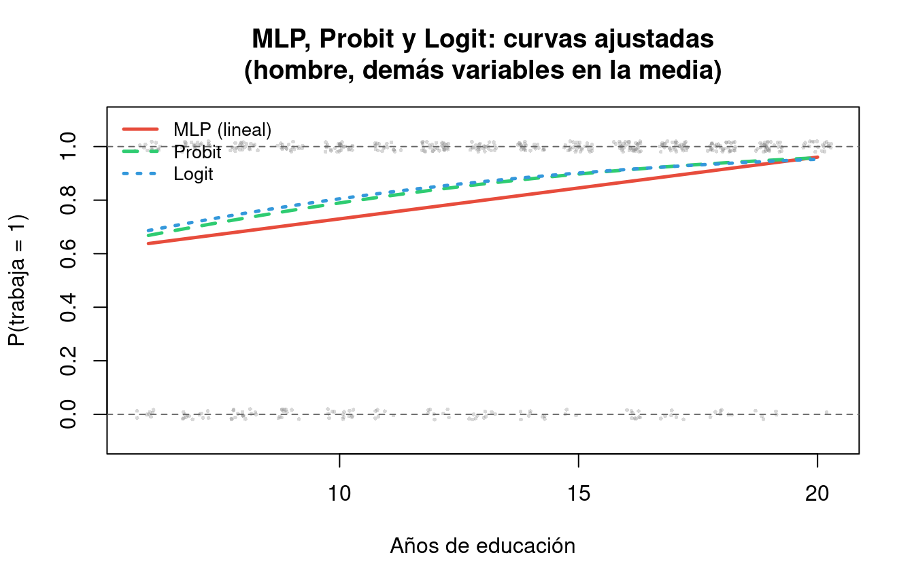
3.11.4 Resumen comparativo
MLP \(\rightarrow\) Simple, rápido, pero con problemas teóricos serios (predicciones fuera de [0,1], heterocedasticidad, efecto marginal constante). Útil como referencia inicial.
Probit \(\rightarrow\) Basado en la distribución Normal estándar. Teóricamente sólido. Interpretación vía efectos marginales. Habitual en economía del trabajo.
Logit \(\rightarrow\) Basado en la distribución logística. Coeficientes interpretables como log-odds. Cálculo más sencillo. El más popular en aplicaciones prácticas.
Conclusión: Probit y Logit producen resultados prácticamente idénticos. La elección depende de la convención del área de investigación y de si interesa interpretar odds ratios (\(\rightarrow\) Logit).
3.12 Resumen: lo esencial en 10 puntos
Variable aleatoria binaria \(y \in \{0, 1\}\) \(\rightarrow\) sigue una distribución Bernoulli(\(p\)).
Función de densidad \(f(x)\): la probabilidad de variables continuas es el área bajo la curva.
CDF \(F(x) = P(X \leq x)\): siempre en \([0, 1]\) \(\rightarrow\) perfecta para modelar probabilidades.
Probit: \(P(y=1) = \Phi(x'\beta)\). Logit: \(P(y=1) = \Lambda(x'\beta) = 1/(1+e^{-x'\beta})\).
Estimación por MV: maximizar \(\ln L(\beta) = \sum[y_i \ln P_i + (1-y_i)\ln(1-P_i)]\).
Coeficientes \(\rightarrow\) solo indican la dirección del efecto (\(\beta > 0 \Rightarrow \uparrow P\)); NO son efectos marginales.
Efectos marginales \(\rightarrow\) \(\frac{\partial P}{\partial x_j} = f(x'\beta) \cdot \beta_j\); dependen del punto de evaluación; usar AME.
Odds Ratios (solo Logit) \(\rightarrow\) \(OR = e^{\beta}\); \(OR > 1\) aumenta odds, \(OR < 1\) reduce odds.
Pseudo-R² McFadden \(\rightarrow\) \(1 - \ln L_{SR}/\ln L_R\); valores \([0.2, 0.4]\) = buen ajuste.
Contrastes \(\rightarrow\) Wald y LR \(\sim \chi^2_r\) bajo \(H_0\); asintóticamente equivalentes.
Material complementario: el script T02_mECO_Script_Eleccion.R y la práctica T02_mECO_Practica_CdeA.Rmd (en la carpeta tema2/) contienen la implementación paso a paso de todo lo desarrollado en estos apuntes.
3.13 Funciones esenciales en R
A continuación se recogen las funciones de R más relevantes para los modelos de elección discreta tratados en este tema. Su uso detallado se desarrolla en la práctica y el script asociados.
3.13.1 Estimación
glm(y ~ x1 + x2, family = binomial(link = "probit"), data = datos)— estima un modelo Probit.glm(y ~ x1 + x2, family = binomial(link = "logit"), data = datos)— estima un modelo Logit.lm(y ~ x1 + x2, data = datos)— estima el Modelo Lineal de Probabilidad (MLP) por MCO.
3.13.2 Predicción
predict(modelo, type = "response")— probabilidades estimadas \(\hat{P}(y=1|X)\).fitted(modelo)— equivalente apredict()contype = "response"para los datos de estimación.
3.13.3 Efectos marginales
margins::margins(modelo)— calcula los efectos marginales medios (AME).margins::margins(modelo, at = list(x1 = valor))— efecto marginal en un punto concreto (MEM).summary(margins(modelo))— tabla con AME, errores estándar e intervalos de confianza.
3.13.4 Odds ratios (solo Logit)
exp(coef(modelo))— odds ratios a partir de los coeficientes estimados.exp(confint(modelo))— intervalos de confianza para los odds ratios.
3.13.5 Bondad de ajuste
pscl::pR2(modelo)— pseudo-R² de McFadden y otros.AIC(modelo)/BIC(modelo)— criterios de información.logLik(modelo)— log-verosimilitud del modelo.
3.13.6 Contrastes de hipótesis
summary(modelo)— contrastes individuales de Wald (\(z\)-test) para cada coeficiente.lmtest::waldtest(modelo_completo, modelo_restringido)— contraste de Wald conjunto.lmtest::coeftest(modelo)— tabla de contrastes con errores estándar robustos si se combinan consandwich::vcovHC().
3.13.7 Clasificación
ifelse(predict(modelo, type = "response") > 0.5, 1, 0)— clasificación con umbral 0.5.table(observado, predicho)— matriz de confusión.caret::confusionMatrix(factor(predicho), factor(observado))— métricas completas (accuracy, sensibilidad, especificidad).
Código R del capítulo
El script completo de este capítulo (T02_mECO_Script_A01_LOGIT_USA_Help_v2.R) está disponible en el repositorio de material complementario del manual:
https://github.com/carlanta/MicroEconometrics
El alumno puede descargar el script directamente desde la carpeta scripts/ del repositorio y ejecutarlo en RStudio de forma interactiva.